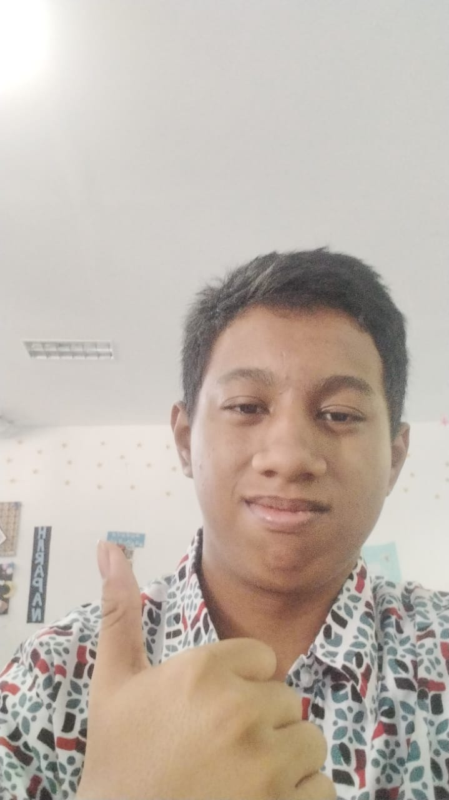

|  | |
|---|---|
| Nama | Aliezzar Wijaya |
| Tanggal Lahir | 17 Januari 2009 |
| Tempat Lahir | Surabaya, Indonesia |
| Pekerjaan | Murid SKOMDA |
Aliezzar Wijaya adalah seorang murid dari SMK Telkom Sidoarjo berkebangsaan Indonesia. Ia lahir pada tanggal 17 Januari 2009 di Surabaya Indonesia.
Aliezzar Wijaya adalah murid dari SMK Telkom Sidoarjo, dimana ia mengejar studi di jurusan sistem informasi jaringan dan aplikasi. Bercita cita sebagai Cyber Security, System Administrator, fullstack developer